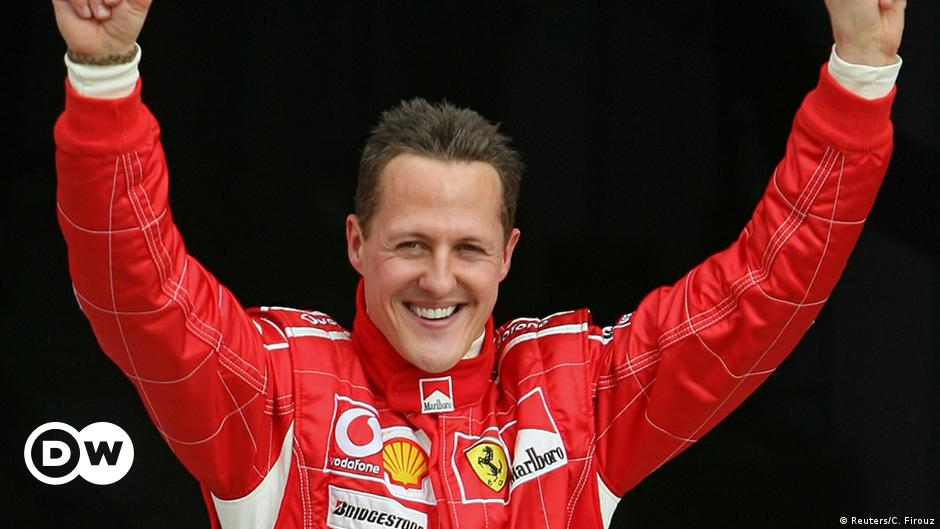

Postava Ferrarija u F1 u sezoni 2022

Charles Leclerc
Leclerc je započeo utrkivanje u kartingu 2005., a iste godine osvaja naslov u francuskom PACA prvenstvu.
Saznaj više
Carlos Sainz
Sainz je utrkivanje počeo u kartingu kao sedmogodišnjak u očevom karting centru u Madridu, ali se ozbiljno njime počeo baviti tek 2005.
Saznaj višeProfil
Za mnoge su utrke Ferrarija i Formule 1 postale nerazdvojni. Jedina momčad koja se natjecala u svakoj sezoni otkako je počelo svjetsko prvenstvo, Prancing Horse je iz skromnog sna osnivača Enza Ferrarija izrastao u jedan od najpoznatijih i najpriznatijih brendova na svijetu. Uspjeh je brzo došao preko Alberta Ascarija i Johna Surteesa, a nastavio se – u mršavijim vremenima – s Nikijem Laudom 1970-ih, a zatim Michaelom Schumacherom 2000-ih, kada je Ferrari osvojio tada neviđenih pet uzastopnih titula u parovima, osiguravši svoj status kao najuspješniji i najuspješniji tim u povijesti F1...
2021
Još uvijek nema naznaka izazova za naslov, ali snažno poboljšanje iz godine u godinu udaljilo ih je od McLarena za P3 sveukupno, s više nego duplo više bodova u 2020. godini. Novopridošli Carlos Sainz nadmašio je Charlesa Leclerca, Španjolca koji je zauzeo četiri postolja na postolju svog suigrača.
2020
Potonuti na svoj najgori učinak u četiri desetljeća, nisu uspjeli pobijediti u utrci, osvojili su samo tri postolja i pali na šesto mjesto na ljestvici. Sebastianu Vettelu je rano rečeno da mu ugovor neće biti obnovljen za 2021. godinu, a Charles Leclerc je taj koji osigurava 98 od 131 bodova momčadi.
2019
Tradicija posljednjih godina se nastavlja, jer ne uspijevaju pobijediti u utrci do kolovoškog VN Belgije, unatoč tome što su bili izraziti favoriti pred sezonu i često imaju najbrži bolid. Zbog napetog (i na trenutke skupog) rivalstva novajlija Charles Leclerc nadmašuje svog veteranskog momčadskog kolege Sebastiana Vettela s dvije pobjede u odnosu na onu četverostrukog prvaka.